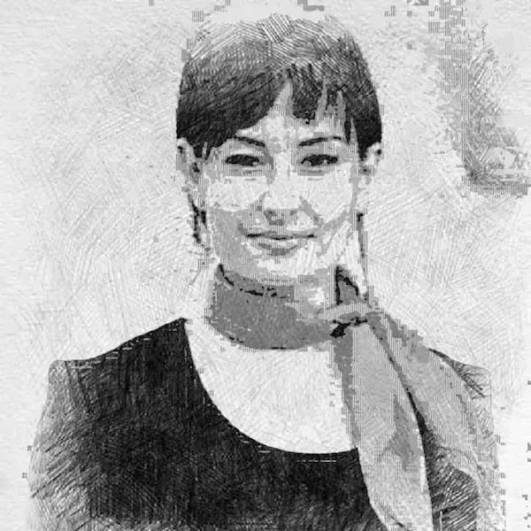

Toulousaine, jeune femme simple, naturelle et dynamique.
Avide de découvertes, je suis passionnée par les voyages et le
tourisme en France. J'ai une vie trépidante.
Mon parcours professionnel dans le domaine de l'accueil depuis plus
de vingt ans m'a tout naturellement destiné vers l'événementiel.
J'ai choisi ce métier pour le relationnel, le service, les nouvelles
rencontres, la diversité des événements et des cadres de travail.
Je suis soignée. J'assure des prestations dans un esprit de
bienveillance et de rigueur. J'aime me sentir impliquée et
satisfaire la demande de la clientèle.
Souvent ce métier est défini par une image «d'une plante verte dans
un coin pour faire joli». Je veux changer cela. Je me suis donc
lancée en free-lance en 2018. J'ai sauté le pas et pris mon envol
pour pouvoir élargir ma palette d'interventions.
Je serai ravie d'établir de nouvelles collaborations.
À bientôt.
Je suis Audrey

